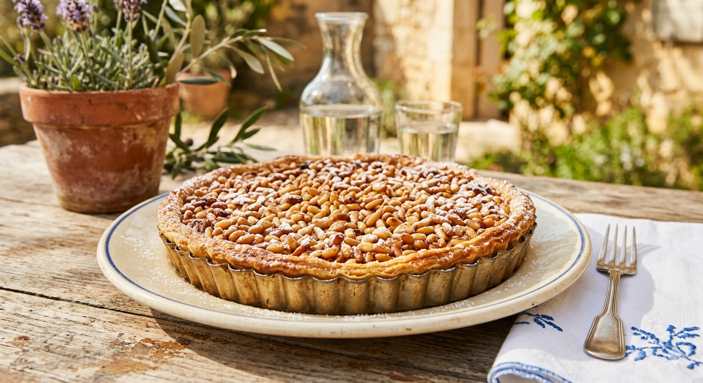

La Petite Histoire
Véritable emblème de la Côte d'Azur et du Var, la tarte aux pignons est née au cœur du massif des Maures et du golfe de Saint-Tropez. Son origine remonte aux traditions provençales, là où les pins parasols règnent en maîtres sur le paysage. Depuis des générations, les familles récoltaient les pommes de pin pour en extraire ces petites graines précieuses. Ce sont les pâtissiers locaux qui ont transformé cette recette paysanne en une pâtisserie fine. Le secret de sa réussite réside dans la générosité de sa couverture : une pluie de pignons de pin qui apportent ce goût de résine et de soleil si caractéristique.
Les Ingrédients
- 1 pâte sablée pur beurre
- 150g de pignons de pin
- 3 œufs
- 100g de sucre roux
- 100g de poudre d'amandes
- 2 cuillères à soupe d'eau de fleur d'oranger
- 50g de beurre fondu
- Sucre glace pour la décoration
La Préparation
1. Le Fond : Préchauffez le four à 180°C. Étalez la pâte dans un moule et piquez-la avec une fourchette.
2. La Crème : Dans un saladier, fouettez les œufs avec le sucre. Ajoutez la poudre d'amandes, le beurre fondu et la fleur d'oranger. Mélangez bien.
3. Le Montage : Versez la crème sur le fond de tarte. Répartissez généreusement les pignons de pin sur toute la surface.
4. La Cuisson : Enfournez pour environ 25 à 30 minutes. Les pignons doivent être bien dorés (surveillez bien la fin de cuisson !).
5. Le Final : Laissez refroidir et saupoudrez de sucre glace. À déguster avec un petit café sous la tonnelle.